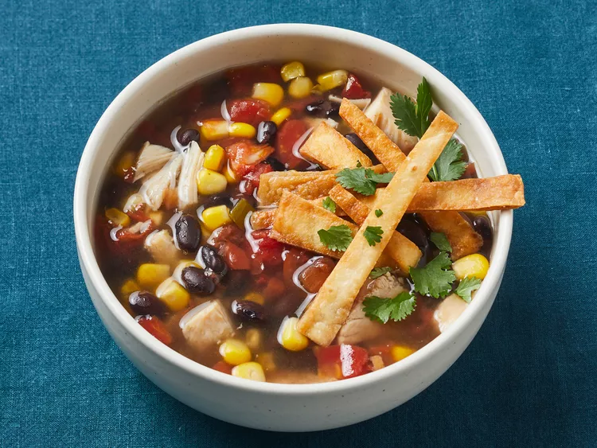

Rush Chicken

Six Can Chicken Tortilla Soup
This easy chicken tortilla soup is a delicious, zesty soup recipe
with only 6 canned ingredients! Serve topped with tortilla chips and
shredded Cheddar cheese.
Throw away the cans, and no one will know it is not from scratch!
Ingredients
- 2 (14.5 ounce) cans chicken broth
- 1 (15 ounce) can whole kernel corn, drained
- 1 (15 ounce) can black beans
- 1 (10 ounce) can chunk chicken
- 1 (10 ounce) can diced tomatoes with green chile peppers, drained
- crushed tortilla chips (Optional)
- shredded Cheddar cheese (Optional)
Directions
- Gather all ingredients.
- Pour chicken broth, corn, black beans, chunk chicken, and diced tomatoes
with green chilies into a large saucepan or stockpot over medium heat.
- Simmer, stirring occasionally, until chicken is heated through, about 15 minutes.
- Serve hot, topped with tortilla chips and grated cheese.